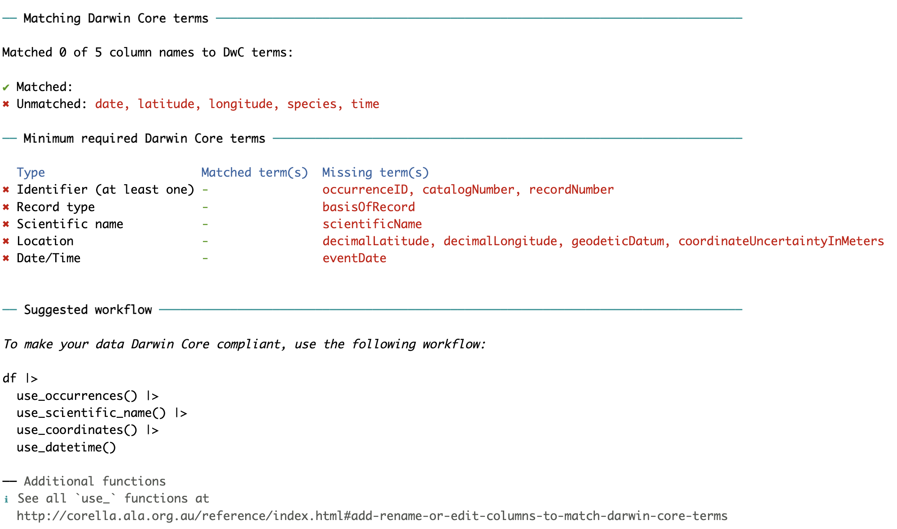

Sharing biodiversity data with galaxias
Peggy Newman, Dax Kellie & Martin Westgate


Darwin Core
An archive is a .zip file containing three things:
| data csv format |
metadata eml format |
schema xml format |
Process
| data | metadata | schema | archive | validate |
Data
Create an example dataset
Data
How should we convert this dataset to Darwin Core?
Data
If we follow that advice:
df |>
use_occurrences(occurrenceID = sequential_id(),
basisOfRecord = "humanObservation") |>
use_coordinates(decimalLatitude = latitude,
decimalLongitude = longitude) |>
use_datetime(eventDate = lubridate::dmy(date),
eventTime = lubridate::hm(time)) |>
use_scientific_name(scientificName = species,
taxonRank = "species")# A tibble: 2 × 8
basisOfRecord occurrenceID decimalLatitude decimalLongitude eventDate
<chr> <chr> <dbl> <dbl> <date>
1 humanObservation 01 -35.3 149. 2023-01-14
2 humanObservation 02 -35.3 149. 2023-01-15
# ℹ 3 more variables: eventTime <Period>, scientificName <chr>, taxonRank <chr>Process
| data | metadata | schema | archive | validate |
Metadata
Generate a metadata file
# Dataset
## Title
A Sentence Giving Your Dataset Title In Title Case
## Abstract
A paragraph outlining the content of the dataset
## Creator
### Individual name
#### SurnameMetadata
Convert to EML
<?xml version="1.0" encoding="UTF-8"?>
<emlEml xmlns:d="eml://ecoinformatics.org/dataset-2.1.0" xmlns:eml="eml://ecoinformatics.org/eml-2.1.1" xmlns:xsi="http://www.w3.org/2001/XMLSchema-instance" xmlns:dc="http://purl.org/dc/terms/" xsi:schemaLocation="eml://ecoinformatics.org/eml-2.1.1 http://rs.gbif.org/schema/eml-gbif-profile/1.3/eml-gbif-profile.xsd" system="R-paperbark-package" scope="system" xml:lang="en">
<dataset>
<title>A Sentence Giving Your Dataset Title In Title Case</title>
<abstract>A paragraph outlining the content of the dataset</abstract>
<creator>
<individualName>
<surname>Person</surname>
<givenName>Steve</givenName>
<electronicMailAddress>example@email.com</electronicMailAddress>
</individualName>
<organisationName>Put your organisation name here</organisationName>
<address>
<deliveryPoint>215 Road Street</deliveryPoint>
<city>Canberra</city>Process
| data | metadata | schema | archive | validate |
Schema
Automated process for mapping files & fields
<?xml version="1.0" encoding="UTF-8"?>
<archive xmlns="http://rs.tdwg.org/dwc/text/" metadata="eml.xml">
<core encoding="UTF-8" rowType="http://rs.gbif.org/terms/Event" fieldsTerminatedBy="," linesTerminatedBy=" " fieldsEnclosedBy="&quot;" ignoreHeaderLines="1">
<files>events.csv</files>
<id index="0"/>
<field index="1" term="http://rs.tdwg.org/dwc/terms/eventID"/>
<field index="2" term="http://rs.tdwg.org/dwc/terms/year"/>
<field index="3" term="http://rs.tdwg.org/dwc/terms/decimalLatitude"/>
<field index="4" term="http://rs.tdwg.org/dwc/terms/decimalLongitude"/>
<field index="5" term="http://rs.tdwg.org/dwc/terms/geodeticDatum"/>
<field index="6" term="http://rs.tdwg.org/dwc/terms/coordinateUncertaintyInMeters"/>
</core>
<extension encoding="UTF-8" rowType="http://rs.tdwg.org/dwc/terms/Occurrence" fieldsTerminatedBy="," linesTerminatedBy=" " fieldsEnclosedBy="&quot;" ignoreHeaderLines="1">
<files>occurrences.csv</files>
<id index="0"/>Process
| data | metadata | schema | archive | validate |
Archive
Automated process for zipping the /data folder
Process
| data | metadata | schema | archive | validate |
Validate
Process
| data | metadata | schema | archive | validate |
Publishing
The ALA publishing API is not yet production ready.
Other options include:
- email your
.zipfile directly - publish on https://zenodo.org and sending us a link
- release public-safe data via GitHub
Then let us know at data_management@ala.org.au
Worked example
Converting ACT Frogwatch data to Event-core
Setup
Get an example dataset
Westgate et al. (2016) Data from: Citizen science program shows urban areas have lower occurrence of frog species, but not accelerated declines. https://doi.org/10.5061/dryad.75s51
We place raw data (Frogwatch_dataset.xlsx)
in the data-raw folder
Setup
Load required packages
# ALA packages
library(galaxias) # formatting for Darwin Core
library(galah) # download data from living atlases
# Other packages
library(readxl) # read from .xlsx
library(readr) # write to .csv
library(dplyr) # data manipulation
library(tidyr) # data cleaning
library(janitor) # more data cleaning
library(tibble) # tibbles
library(zip) # handle .zip filesData Import
Sites
sites <- read_xlsx("data-raw/Frogwatch_dataset.xlsx",
sheet = "sites") |>
clean_names()
glimpse(sites)Rows: 320
Columns: 15
$ site_code <chr> "AMA100", "AMH100", "ANB100", "ANU004", "ANU018", "ANU019",…
$ log_size <dbl> 2.91453547, 0.55428721, 2.01283723, 1.75379190, 2.37748838,…
$ depth <chr> "deep", "shallow", "deep", "deep", "deep", "deep", "deep", …
$ water_type <chr> "moving", "moving", "moving", "moving", "still", "still", "…
$ latitude <dbl> -35.16818, -35.23530, -35.27813, -35.28055, -35.28190, -35.…
$ longitude <dbl> 149.1192, 149.0454, 149.1101, 149.1117, 149.1121, 149.1151,…
$ cpar <dbl> 1, 0, 0, 0, 0, 0, 1, 1, 1, 0, 1, 0, 0, 1, 1, 1, 1, 1, 1, 1,…
$ csig <dbl> 1, 0, 1, 1, 1, 1, 1, 1, 1, 1, 1, 0, 1, 1, 1, 1, 1, 1, 1, 1,…
$ limdum <dbl> 1, 0, 1, 1, 0, 1, 1, 0, 0, 0, 0, 0, 1, 0, 0, 0, 0, 1, 1, 0,…
$ limper <dbl> 0, 1, 1, 0, 1, 1, 1, 1, 1, 0, 1, 1, 1, 0, 0, 1, 0, 0, 1, 0,…
$ limtas <dbl> 1, 1, 0, 1, 0, 1, 1, 1, 1, 0, 1, 0, 1, 0, 1, 1, 0, 1, 1, 1,…
$ lper <dbl> 1, 0, 0, 0, 0, 0, 0, 0, 0, 0, 0, 0, 0, 0, 1, 1, 1, 1, 1, 0,…
$ lver <dbl> 1, 0, 0, 0, 0, 0, 0, 0, 0, 0, 0, 0, 0, 0, 0, 0, 0, 1, 1, 0,…
$ ulae <dbl> 0, 0, 0, 0, 0, 0, 0, 0, 1, 0, 0, 0, 0, 0, 0, 1, 1, 1, 0, 0,…
$ richness <dbl> 6, 2, 3, 3, 2, 4, 5, 4, 5, 1, 4, 1, 4, 2, 4, 6, 4, 7, 7, 3,…Setup
Establish an RStudio project
├── README.md : Description of the repository
├── metadata.md : Boilerplate metadata statement for this project
├── projectname.Rproj : RStudio project file
├── data-raw : Folder to store source data
└── data : Folder to store processed dataData Import
Species
# A tibble: 8 × 3
scientific_name common_name abbreviation
<chr> <chr> <chr>
1 Crinia parinsignifera Plains Froglet cpar
2 Crinia signifera Common Eastern Froglet csig
3 Limnodynastes dumerilii Pobblebonk limdum
4 Limnodynastes peronii Striped Marsh Frog limper
5 Limnodynastes tasmaniensis Spotted Grass Frog limtas
6 Litoria peronii Emerald Spotted Frog lper
7 Litoria verreauxii Alpine Tree Frog lver
8 Uperoleia laevigata Smooth Toadlet ulae Data Import
Observations
obs <- read_xlsx("data-raw/Frogwatch_dataset.xlsx",
sheet = "observations") |>
clean_names()
glimpse(obs)Rows: 3,633
Columns: 18
$ site_code <chr> "AMA100", "AMA100", "AMA100", "AMA100", "AMA100", "AMA100",…
$ year <dbl> 2004, 2007, 2007, 2005, 2008, 2008, 2013, 2008, 2013, 2014,…
$ depth <chr> "deep", "deep", "deep", "deep", "deep", "deep", "deep", "de…
$ water_type <chr> "moving", "moving", "moving", "moving", "moving", "moving",…
$ log_size <dbl> 2.9145355, 2.9145355, 2.9145355, 2.9145355, 2.9145355, 2.91…
$ veg_aqu <dbl> 1, 1, 1, 1, 1, 1, 1, 1, 1, 1, 1, 2, 2, 2, 2, 2, 2, 2, 2, 2,…
$ veg_canopy <dbl> 0, 0, 0, 0, 0, 0, 0, 0, 0, 0, 0, 1, 1, 1, 1, 1, 1, 1, 1, 1,…
$ veg_bank <dbl> 1, 1, 1, 1, 1, 1, 1, 1, 1, 1, 1, 2, 2, 2, 2, 2, 2, 2, 2, 2,…
$ pc_urban <dbl> 0.2260, 0.2067, 0.2067, 0.2813, 0.2067, 0.2067, 0.2200, 0.2…
$ pc_canopy <dbl> 0.0427, 0.0987, 0.0987, 0.0567, 0.0607, 0.0607, 0.0860, 0.0…
$ cpar <dbl> 1, 1, 1, 1, 1, 1, 1, 1, 1, 1, 1, 0, 0, 0, 0, 0, 0, 0, 0, 0,…
$ csig <dbl> 0, 0, 0, 1, 0, 0, 0, 0, 1, 1, 1, 0, 0, 0, 0, 0, 0, 0, 0, 0,…
$ limdum <dbl> 0, 1, 1, 1, 1, 1, 1, 1, 0, 1, 0, 0, 0, 0, 0, 0, 0, 0, 0, 0,…
$ limper <dbl> 0, 0, 0, 0, 0, 0, 0, 0, 0, 0, 0, 0, 1, 1, 0, 0, 1, 0, 0, 0,…
$ limtas <dbl> 1, 1, 1, 1, 0, 1, 1, 1, 0, 1, 1, 1, 1, 1, 1, 1, 1, 1, 1, 1,…
$ lper <dbl> 1, 0, 0, 0, 1, 1, 0, 1, 0, 0, 0, 0, 0, 0, 0, 0, 0, 0, 0, 0,…
$ lver <dbl> 0, 0, 0, 0, 0, 0, 0, 0, 0, 0, 1, 0, 0, 0, 0, 0, 0, 0, 0, 0,…
$ ulae <dbl> 0, 0, 0, 0, 0, 0, 0, 0, 0, 0, 0, 0, 0, 0, 0, 0, 0, 0, 0, 0,…Interlude
We have two options here:
- occurrence-based dataset: all observations are assumed to be independent (ALA default)
- event-based dataset: simultaneous observations are grouped together
Interlude
Most multi-species surveys are ‘event’-like, so we’ll use ‘event core’, which requires we split our data into two files:
- events.csv contains site visits and attributes.
- occurrences.csv contains observations made during those visits, including absences.
Events
In this case, each event is a 5-minute audio survey for calling frogs. Frogs are recorded as present or absent (i.e. no abundance data)
Events
Add an eventID field
obs <- obs |>
select(site_code, year, any_of(spp$abbreviation)) |>
use_events(eventID = composite_id(sequential_id(),
site_code,
year)) |>
relocate(eventID, .before = 1)
print(obs, n = 5)# A tibble: 3,633 × 11
eventID site_code year cpar csig limdum limper limtas lper lver ulae
<chr> <chr> <dbl> <dbl> <dbl> <dbl> <dbl> <dbl> <dbl> <dbl> <dbl>
1 00001-AMA1… AMA100 2004 1 0 0 0 1 1 0 0
2 00002-AMA1… AMA100 2007 1 0 1 0 1 0 0 0
3 00003-AMA1… AMA100 2007 1 0 1 0 1 0 0 0
4 00004-AMA1… AMA100 2005 1 1 1 0 1 0 0 0
5 00005-AMA1… AMA100 2008 1 0 1 0 0 1 0 0
# ℹ 3,628 more rowsEvents
Add spatial fields
obs <- obs |>
left_join(select(sites, site_code, latitude, longitude),
by = "site_code") |>
use_coordinates(latitude,
longitude,
geodeticDatum = "WGS84",
coordinateUncertaintyInMeters = 30) |>
relocate(decimalLatitude, decimalLongitude, .after = eventID)
print(obs, n = 5)# A tibble: 3,633 × 15
eventID decimalLatitude decimalLongitude site_code year cpar csig limdum
<chr> <dbl> <dbl> <chr> <dbl> <dbl> <dbl> <dbl>
1 00001-AMA… -35.2 149. AMA100 2004 1 0 0
2 00002-AMA… -35.2 149. AMA100 2007 1 0 1
3 00003-AMA… -35.2 149. AMA100 2007 1 0 1
4 00004-AMA… -35.2 149. AMA100 2005 1 1 1
5 00005-AMA… -35.2 149. AMA100 2008 1 0 1
# ℹ 3,628 more rows
# ℹ 7 more variables: limper <dbl>, limtas <dbl>, lper <dbl>, lver <dbl>,
# ulae <dbl>, coordinateUncertaintyInMeters <dbl>, geodeticDatum <chr>Events
Save out
events <- obs |>
select(any_of(event_terms()))
write_csv(events, "data/events.csv")
check_dataset(events)✔ | E P | Column Error in `map()`:
ℹ In index: 6.
Caused by error in `check_coordinateUncertaintyInMeters()`:
! could not find function "check_coordinateUncertaintyInMeters"
[ Errors: 0 | Pass: 6 ]
✖ Data meets minimum Darwin Core requirements
🌈 All column checks pass!Occurrences
Each occurrence is a datum of whether a species was, or was not, detected. Occurrences are nested within events.
Occurrences
Restructure to long-form
obs_long <- obs |>
select(eventID, any_of(spp$abbreviation)) |>
pivot_longer(cols = spp$abbreviation,
names_to = "abbreviation") |>
left_join(spp, by = "abbreviation") |>
select(-abbreviation) |>
relocate(value, .after = last_col())
print(obs_long, n = 5)# A tibble: 29,064 × 4
eventID scientific_name common_name value
<chr> <chr> <chr> <dbl>
1 00001-AMA100-2004 Crinia parinsignifera Plains Froglet 1
2 00001-AMA100-2004 Crinia signifera Common Eastern Froglet 0
3 00001-AMA100-2004 Limnodynastes dumerilii Pobblebonk 0
4 00001-AMA100-2004 Limnodynastes peronii Striped Marsh Frog 0
5 00001-AMA100-2004 Limnodynastes tasmaniensis Spotted Grass Frog 1
# ℹ 29,059 more rowsOccurrences
Optional: Check against ALA taxonomy
# A tibble: 8 × 15
search_term scientific_name scientific_name_auth…¹ taxon_concept_id rank
<chr> <chr> <chr> <chr> <chr>
1 Crinia parinsig… Crinia parinsi… Main, 1957 https://biodive… spec…
2 Crinia signifera Crinia signife… Girard, 1853 https://biodive… spec…
3 Limnodynastes d… Limnodynastes … Peters, 1863 https://biodive… spec…
4 Limnodynastes p… Limnodynastes … (Duméril & Bibron, 18… https://biodive… spec…
5 Limnodynastes t… Limnodynastes … Günther, 1858 https://biodive… spec…
6 Litoria peronii Litoria peronii (Tschudi, 1838) https://biodive… spec…
7 Litoria verreau… Litoria verrea… (Duméril, 1853) https://biodive… spec…
8 Uperoleia laevi… Uperoleia laev… Keferstein, 1867 https://biodive… spec…
# ℹ abbreviated name: ¹scientific_name_authorship
# ℹ 10 more variables: match_type <chr>, kingdom <chr>, phylum <chr>,
# class <chr>, order <chr>, family <chr>, genus <chr>, species <chr>,
# vernacular_name <chr>, issues <chr>Occurrences
Optional: Join taxonomy
obs_long <- obs_long |>
left_join(select(taxa, -search_term, -species, -vernacular_name, -issues, -match_type),
by = "scientific_name")
print(obs_long, n = 5)# A tibble: 29,064 × 13
eventID scientific_name common_name value scientific_name_auth…¹
<chr> <chr> <chr> <dbl> <chr>
1 00001-AMA100-2004 Crinia parinsignif… Plains Fro… 1 Main, 1957
2 00001-AMA100-2004 Crinia signifera Common Eas… 0 Girard, 1853
3 00001-AMA100-2004 Limnodynastes dume… Pobblebonk 0 Peters, 1863
4 00001-AMA100-2004 Limnodynastes pero… Striped Ma… 0 (Duméril & Bibron, 18…
5 00001-AMA100-2004 Limnodynastes tasm… Spotted Gr… 1 Günther, 1858
# ℹ 29,059 more rows
# ℹ abbreviated name: ¹scientific_name_authorship
# ℹ 8 more variables: taxon_concept_id <chr>, rank <chr>, kingdom <chr>,
# phylum <chr>, class <chr>, order <chr>, family <chr>, genus <chr>Occurrences
Swap to Darwin Core headers
obs_long <- obs_long |>
use_occurrences(
occurrenceID = composite_id(eventID, sequential_id()),
basisOfRecord = "humanObservation",
occurrenceStatus = dplyr::case_when(value == 1 ~ "present",
.default = "absent")) |>
use_scientific_name(scientificName = scientific_name,
scientificNameAuthorship = scientific_name_authorship,
taxonRank = rank) |>
use_taxonomy(vernacularName = common_name) |>
rename(taxonConceptID = taxon_concept_id)Occurrences
Export
Summary
Two datasets linked by eventID
Rows: 29,064
Columns: 15
$ basisOfRecord <chr> …
$ occurrenceID <chr> …
$ occurrenceStatus <chr> …
$ eventID <chr> …
$ taxonConceptID <chr> …
$ scientificName <chr> …
$ kingdom <chr> …
$ phylum <chr> …
$ class <chr> …
$ order <chr> …
$ family <chr> …
$ genus <chr> …
$ taxonRank <chr> …
$ scientificNameAuthorship <chr> …
$ vernacularName <chr> …